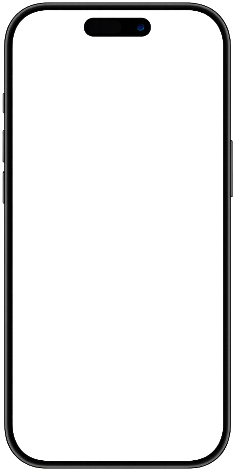
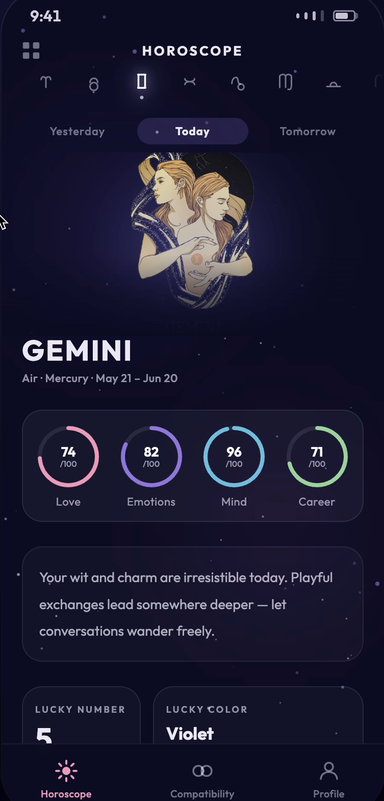
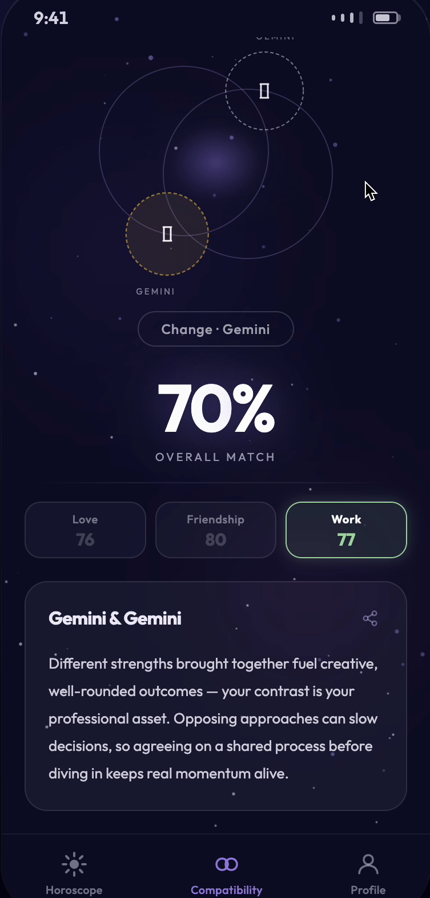
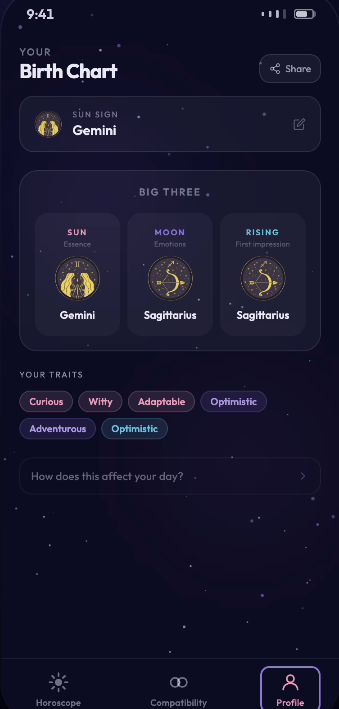
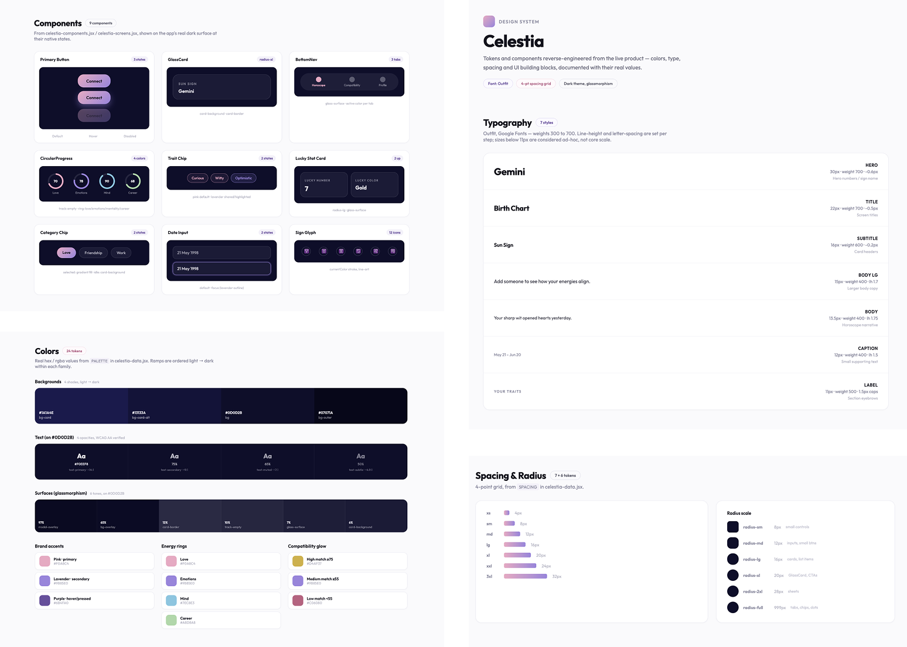

Celestia
A horoscope PWA with daily readings, real zodiac compatibility, and personal birth charts, designed and built end-to-end through a prompt-driven, AI-assisted workflow.

Most horoscope apps feel generic, with the same daily blurb regardless of who's reading it. Celestia was built to feel personal: a daily reading tied to real stats (Love, Emotions, Mind, Career), a compatibility engine that calculates actual synergy between two signs, and a birth chart that maps out someone's Sun, Moon, and Rising.
The bigger experiment was the workflow itself: designing and shipping a full PWA through prompts alone, from concept to a deployed product, using AI at every stage of the pipeline.
The Problem
Horoscope apps are everywhere, but most of them give everyone with the same sun sign the exact same paragraph. People open them as a small daily ritual, then drift away because nothing feels written for them.
How might we make a daily horoscope feel personal, quick to read, and worth coming back to?
Research
I looked at popular astrology apps such as Co–Star, The Pattern and Sanctuary. Most either go deep and dense, or stay short and generic. Few combine a fast daily read with something to explore.
Horoscopes work less as predictions and more as a light daily ritual: a moment of reflection, a conversation starter, and something to share with friends.
A reading short enough for a morning glance, backed by clear numbers and tools (daily stats, compatibility, birth chart) that invite people to keep exploring.
Who It's For
Checks her sign with her morning coffee. Wants something quick, beautiful and a little uplifting, not a wall of text.
Needs: a summary she can read at a glance.
Into astrology mostly because his friends are. Loves comparing signs before a date or a trip with friends.
Needs: compatibility he can understand and talk about.
Glanceable first, deeper on demand. Numbers over vague text. One card system across every screen, so nothing has to be learned twice.
The Process: Designing With AI
Used Gemini to brainstorm the app's structure, feature set, and copy tone, shaping ideas like "Cosmic Synergy" and the language used to describe each sign's traits.
Used Claude Design to explore the visual direction: a dark, cosmic palette, glowing progress rings, and a card system reused consistently across every screen.
Used Claude Code to implement the PWA end-to-end (components, state, and logic) and to deploy the finished build to Vercel.
A Day With Celestia
Open the app and see today's reading as four rings: Love, Emotions, Mind and Career. The whole day in a few seconds.
Pick a partner's or friend's sign and get an instant synergy score with what works and what to watch.
Open the birth chart to understand Sun, Moon and Rising, the parts of identity behind the daily reading.
Key Screens
Daily Insights: Stats & Trends
Personalized daily overview featuring emotional state metrics and astrological trends.
Cosmic Compatibility: Real-Time Analysis
Synergy calculation engine providing real-time compatibility insights between zodiac signs.
Personal Birth Chart: Core Identity
Comprehensive birth chart mapping focused on the fundamental pillars of user identity.



Design Decisions
The interface leans into a dark, cosmic palette, with deep navy backgrounds and soft pink, violet, and blue accents, paired with Oswald for headings and Inter for body text. Circular progress rings carry the daily stats, and a single card system repeats across the Horoscope, Compatibility, and Profile screens, so the app feels cohesive without needing more than a handful of components.
Design
System
Once the app was built, a design system was generated from the real code via Claude Design, consolidating the color palette, typography, and reusable components that had emerged from the project into a single documented reference.

Next Steps
Run usability tests with five people who already read horoscopes, to check whether the daily stats are understood at a glance and whether compatibility results feel trustworthy.
Then explore a gentle daily reminder, saving favourite readings, and sharing a compatibility result as an image.
Takeaways
Building Celestia taught me that AI is an incredible partner for rapid prototyping and idea generation. While AI doesn't always provide a perfect result on the first try, it excels at providing the visual references and design systems needed to refine my vision. Through iterative prompting, I was able to translate my intent into high-fidelity designs, proving that my role is less about manual execution and more about curating and polishing AI-assisted output.